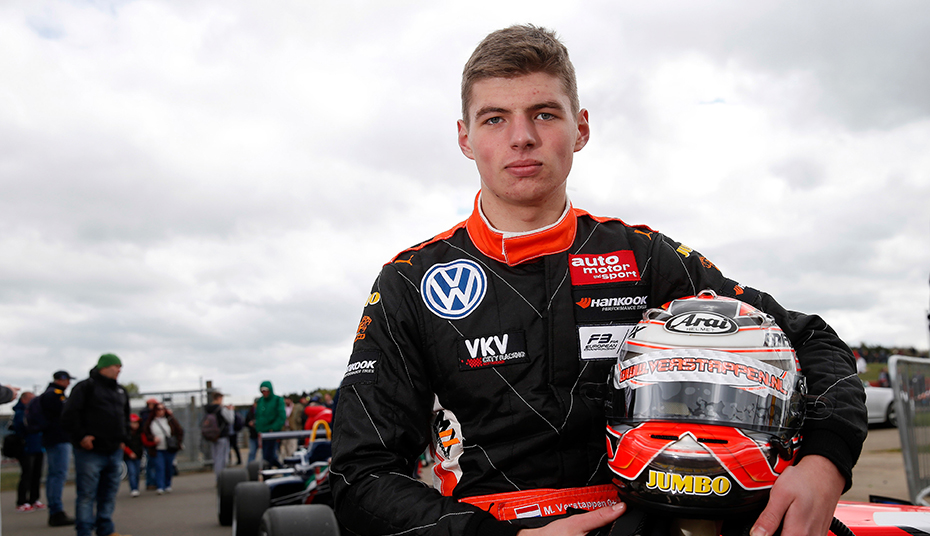
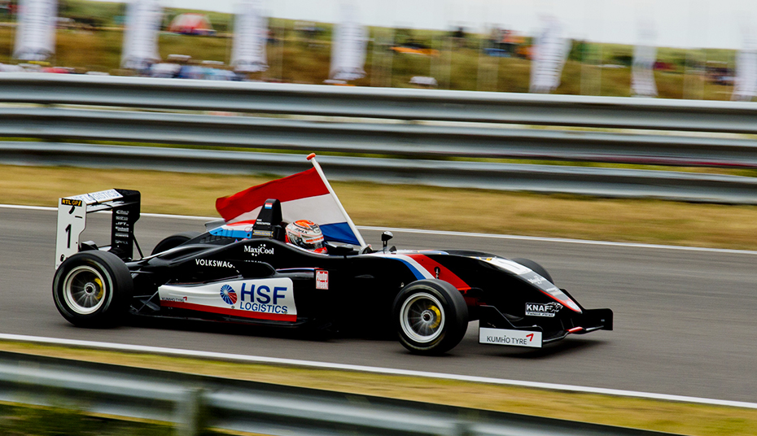
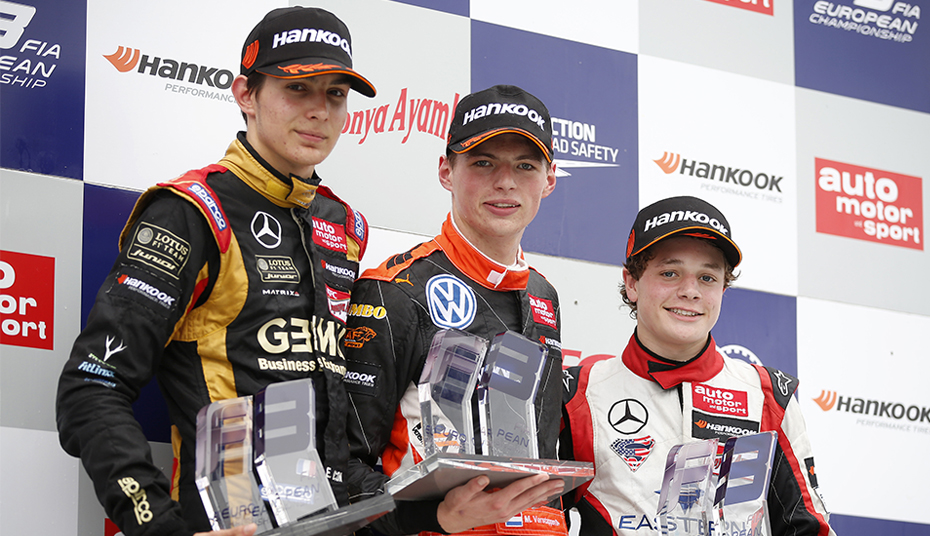
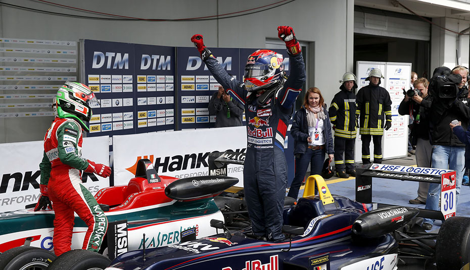
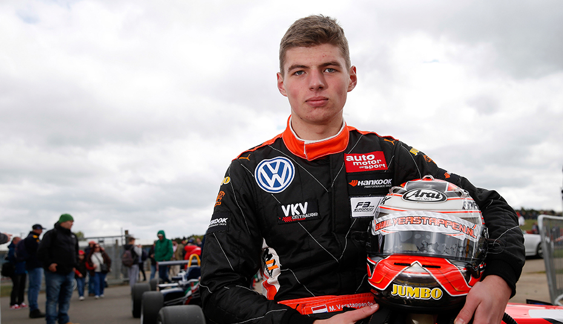
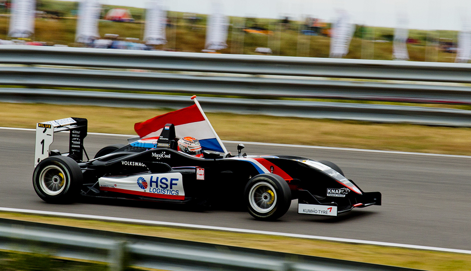
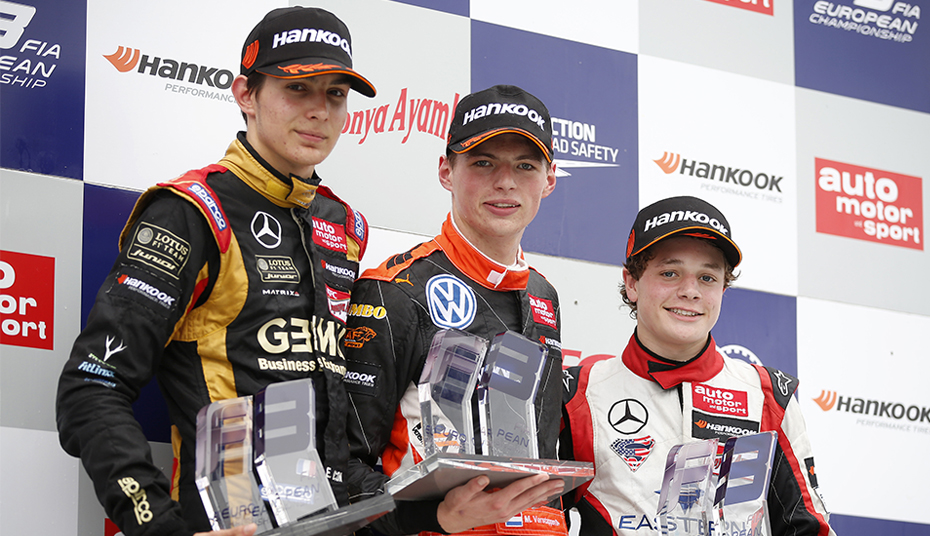
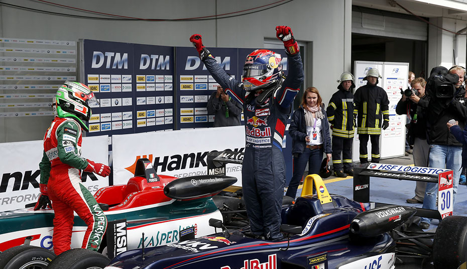

Max Verstappen
MAX VERSTAPPEN
But while the move has its critics, Red Bull’s faith in the Dutchman is unquestionable. And alongside a scintillating rookie season in F3, immediately impressive F1 outings hinted that Verstappen might really be the once-in-a-generation talent Red Bull believe they have unearthed… Max Emilian Verstappen was born in Hasselt, in the east of Belgium, on September 30, 1997. Motorsport was in his blood: father Jos was competing in Formula One racing at the time - in fact he competed for Tyrrell in Japan 10 days after Max’s arrival - while mother Sophie Kumpen was a successful, and extremely quick, kart driver. Max followed suit. Aged four, he received his first kart. In his first three years, he won nearly every race he entered. He had soon graduated onto the national and then international scene, again with emphatic success. His ascent culminated in an outstanding 2012, as he swept all before him to become a European and world karting champion.
JUNIOR CAREER
Verstappen graduated into single-seaters the following year. Two wins and five podiums in the Florida Winter Series suggested he could handle the step up, but the real validation would come in the FIA European F3 championship. Verstappen qualified fourth for his first race, took a podium in his third, pole for his fifth, and a pole/victory double in just his sixth event.
“A remarkable string of six consecutive victories thrust him into second in the championship, and earned the attention of a number of F1 teams, among them Red Bull. ”
But Verstappen was just getting started. A remarkable string of six consecutive victories at Spa and the Norisring thrust him into second in the championship, and earned the attention of a number of F1 teams, among them Red Bull. One week later, he won the F3 Masters at Zandvoort from pole position, leading every lap en route to victory.
A month on, it was announced that Verstappen had joined Red Bull’s distinguished junior driver programme. Less than a week later, the latest milestone of his meteoric rise was confirmed as Red Bull placed him with Toro Rosso in 2015.
 







TORO ROSSO
While the announcement caused waves in motorsport and indeed the wider world, Verstappen was unfazed. In October he made his Grand Prix weekend debut as he drove for Toro Rosso in FP1 at Suzuka, finishing within half a second of the team’s regular Daniil Kvyat. One week later he was back in F3, picking up a victory and a podium at Monza.
He would win once more, in the final round, to finish third overall, a sensational performance for a rookie. He would also complete a further two Friday practice sessions for Toro Rosso, before testing for the team at the end of the season.
Preparations for the 17-year-old’s debut season were predictably intensive, and the hype (not least from Red Bull talent chief Helmut Marko, who compared him in the same breath as Ayrton Senna) sky high, but from the off Verstappen looked at ease racing alongside considerably more experienced rivals.
The Dutch teenager drew criticism for his spectacular clash with Romain Grosjean at Monaco, but for the most part he displayed a maturity that belied his tender years, with his feisty attitude and gung-ho approach to overtaking earning him universal acclaim. By the year's end he had earned 22 more points than any other rookie and picked up a record three FIA awards (Rookie of the Year, Personality of the Year and Action of the Year).
RED BULL RACING
Initial promise fulfilled (and then some), the question then was how far can he could go with Toro Rosso in year two. Not far was the answer - but only because four races into the 2016 season, bosses unexpectedly chose to promote him to sister team Red Bull Racing, swapping seats with Daniil Kvyat.
Can Verstappen prove his worth and became a match for Red Bull number one Daniel Ricciardo? Whatever happens, it's sure to be exciting...